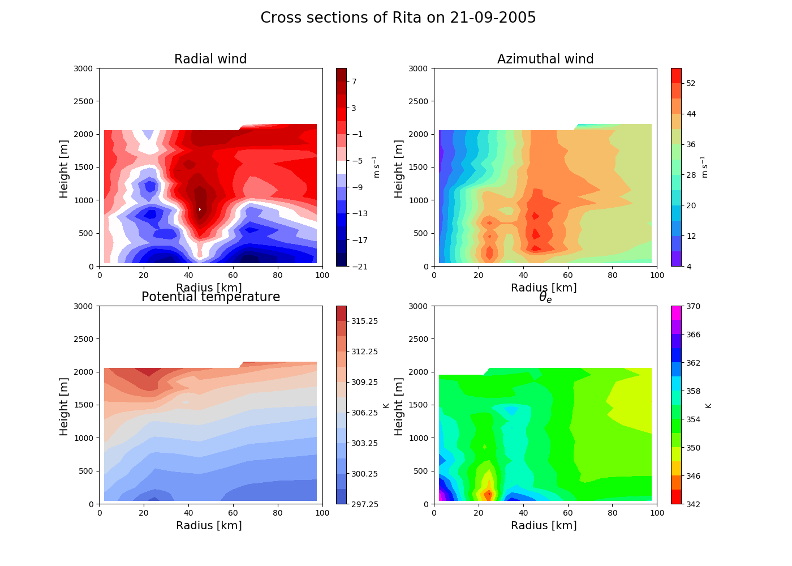
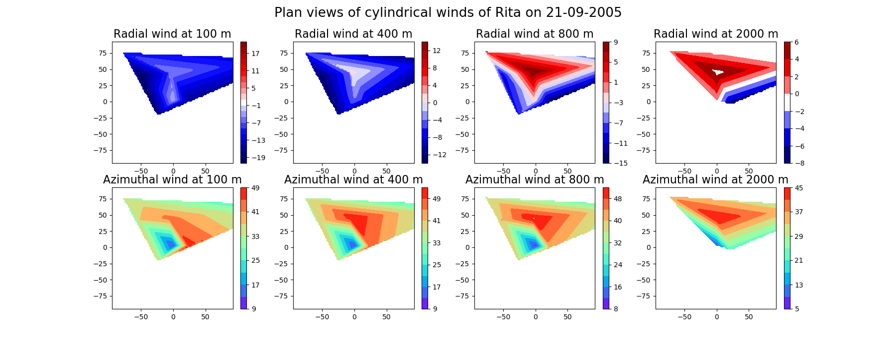
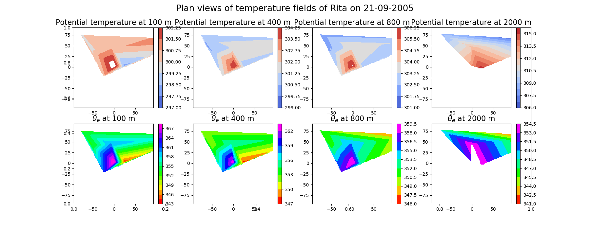

Plot the wind and temperature structure of a TC¶
- This example will plot the cylindrical-coordinate system winds and temperature fields, i.e.,
- radial \(\frac{\partial r}{\partial t}\) and azimuthal \(\frac{\partial \Theta}{\partial t}\) wind speeds and the potential temperature (\(\theta\)) and the equivalent potential temperature (\(\theta_e\)).
As such, this example is closely related to several functions in the toolbox, mainly:
toolbox.cart_to_cylindr(), toolbox.potential_temperature() and toolbox.equivalent_potential_temperature().
Note
This example is not documented-inline but it is rather explained through the Sphinx-Gallery pages, i.e., through this text floating around on top of the text-block. This allows to have short but explained example files.
The first section of this example includes the preamble, which is highly documented in _sphx_glr_auto_examples_plot_drift.py() and processing().
import os
import numpy as np
import scipy
import sys
import matplotlib.pyplot as plt
from scipy.interpolate import griddata
The example is based on reading-in the outputfile of the module processing() which is a temporary file written by the
external Julia routine. The file is then imported as a numpy array through the function np.genfromtxt.
matrix=np.genfromtxt('tempjulia.txt')
r=matrix[:,0]
H=matrix[:,5]
u_radial=matrix[:,11]
v_tang=matrix[:,10]
x=matrix[:,12]
y=matrix[:,13]
temperature=matrix[:,6]
thetae=matrix[:,7]
thetas=matrix[:,1]
Given that this script is originally meant to be run by the interface(), it has two system arguments, i.e., strings provided by either the user or
the outer script. These two parameters are the storm name and the date of the measurement. This can be provided by the user.
After allocating these parameters, the figure directory is defined but it can be changed and adapted to user’s os.
Note
User can modify and tamper the figure directory to select the directory of their choice.
#storm=sys.argv[1]
#sdate=sys.argv[2]
storm='Rita'
sdate='2005-09-20'
print(sdate)
figdir='/home/jlgf/Documents/MRes/Project/figs/'+storm+'/'
Cross sections¶
Axisymmetric cross sections are typical plots used to observe the structure of a Tropical Cyclone. In particular, this type of plots rely on the notion that these convective systems are symmetric with respect to their centre. In other words, at the same radius (\(r\)) most properties will have the same magnitude.
In other words, these cross sections are radius-height (r-H) cross sections. To produce this r-H plots, interpolation of the dropsonde observations is needed. For that reason we imported the griddata function from scipy. The following block does the interpolation.
#interpolation grid
ri=np.arange(0,100,2.5)
Hi=np.arange(50,3200,100)
#interpolation fields.
mean_azi=scipy.interpolate.griddata((r,H),v_tang, (ri[None,:], Hi[:,None]),method='linear')
mean_radial=scipy.interpolate.griddata((r,H),u_radial, (ri[None,:], Hi[:,None]),method='linear')
mean_temp=scipy.interpolate.griddata((r,H),temperature, (ri[None,:], Hi[:,None]),method='linear')
mean_vert=scipy.interpolate.griddata((r,H),thetae, (ri[None,:], Hi[:,None]),method='linear')
After producing interpolated fields for the cross sections, creating the figure is the next step. In this case, we produce a figure with 4 subplots (2x2) that will allocate radial and azimuthal winds on the upper panel and potential temperature and equivalent potential temperature on the lower panel. Similarly, lists to customize plots are created. Labels and spacing of the contour levels are an example of the mentioned lists. Notice how the syntax of the following block is centered around a for-loop to provide brevity to this example. Also noteworthy is the commented line of a scatter plot. This plot will visually show where the dropsonde measurements are located in this plot, a crucial part since this is an interpolated plot and interpretation should always be subject to data coverage.
plt.figure(figsize=(14,10))
plottingdictionary={"Radial wind":mean_radial,"Azimuthal wind":mean_azi,"Potential temperature":mean_temp,r"$\theta_e$":mean_vert}
colormaps=['seismic','rainbow','coolwarm','gist_rainbow']
labels=[r'm s$^{-1}$',r'm s$^{-1}$','K','K']
spacing=[2,4,1.5,2]
counter=0
for variable in plottingdictionary.keys():
field=plottingdictionary[variable]
ax=plt.subplot(221+counter)
CS=plt.contourf(ri,Hi,field,cmap=colormaps[counter],levels=np.arange(int(np.nanmin(field))-(spacing[counter]/2),int(np.nanmax(field))+(spacing[counter]),spacing[counter]))
plt.xlabel('Radius [km] ',fontsize=14)
plt.ylabel('Height [m] ',fontsize=14)
# ax.scatter(r,H,color='black',s=1)
plt.title(variable,fontsize=16)
plt.xlim([0,100])
plt.ylim([0,3000])
plt.colorbar(CS,label=labels[counter])
counter+=1
The final part of this exercise is to define the title, based on the storm’s name and date.
plt.suptitle(' Cross sections of '+storm+' on '+str(sdate),fontsize=19)
plt.savefig(crossect_nolines'+str(sdate)+'.png')
plt.show()
Plan views¶
Plan views refer to a plot that shows the horizontal structure as viewed from above in the z-axis. In other words, we take all points in a particular height and compute interpolated horizontal grids.
The first block includes the set-up of the plot by defining the levels where plan views will be plotted (heights) and creating the figure objects. Also in this block, the definition of the new grid for the interpolated grid is defined. Notice that these values (-75,75) could set-up differently for different storms and that the spacing is equal to 2 km.
heights=[100,400,800,2000]
figwinds=plt.figure(figsize=(18,7))
figtemps=plt.figure(figsize=(18,7))
xi=np.arange(-75,75,2.5)
yi=np.arange(-75,75,2.5)
After this, another for-loop structure is written to iterate over all heights specified in the heights list. Inside this loop, indices is the main tool since it locates all the indexes where the fields must be sliced. This variable finds all the required values that meet the height requirements. In other words, out of the large array imported from the text-file, this tool rapidly selects all the values that are within a given height zone. In this case, a 80 m window was chosen to find the heights in this section.
for counter,hh in enumerate(heights):
indices=np.where((H>hh-40)& (H<hh+40))
shortx=x[indices]
shorty=y[indices]
spacing=[2,4,0.75,1.5]
A second loop is required to effectively fill the figures objects with the plan views of all fields. The first line of this block is the definition of the dictionary, filled with the large arrays read-in from the text-file. Subsequently, there is a figure selection that depends on the chose field. Notice the loop is in place so as to save space since most of the processing and interpolation is roughly the same for all fields. The following block roughly interpolates and plots the plan views while setting-up the title and colorbar labels.
plottingdictionary={"Radial wind":u_radial,"Azimuthal wind":v_tang,"Potential temperature":temperature,r"$\theta_e$":thetae}
for incounter,key in enumerate(plottingdictionary.keys()):
if key=="Radial wind":
ax=figwinds.add_subplot(241+counter)
elif key == "Azimuthal wind":
ax=figwinds.add_subplot(245+counter)
elif key=="Potential temperature":
ax=figtemps.add_subplot(241+counter)
else:
ax=figtemps.add_subplot(245+counter)
sliced_var=plottingdictionary[key][indices]
interp_var=scipy.interpolate.griddata((shortx,shorty),sliced_var, (xi[None,:], yi[:,None]),method='linear')
if key=="Radial wind" and hh <500:
levelss=np.arange(int(np.nanmin(interp_var))-(spacing[incounter]/2),-int(np.nanmin(interp_var))+spacing[incounter],spacing[incounter])
else:
levelss=np.arange(int(np.nanmin(interp_var)-(spacing[incounter]/2)),int(np.nanmax(interp_var)+(spacing[incounter])),spacing[incounter])
cs=ax.contourf(xi,yi,interp_var,cmap=colormaps[incounter],levels=levelss)
plt.colorbar(cs,ax=ax)
ax.set_title(key+' at '+str(hh)+' m',fontsize=16)
After the figure objects have been properly filled, the next and final block should add the figure titles, save and show the outcome.
figwinds.suptitle('Plan views of cylindrical winds of '+storm+' on '+str(sdate),fontsize=19)
figtemps.suptitle('Plan views of temperature fields of '+storm+' on '+str(sdate),fontsize=19)
figwinds.savefig(figdir+'planviews/winds_'+str(sdate)+'.png')
figtemps.savefig(figdir+'planviews/temps_'+str(sdate)+'.png')
Expected cross sections for Rita in September 21, 2005 :¶
Expected plan views for Rita in September 21, 2005 :¶
 This script can be used by both inserting in the interface the name of storm and selecting the option to do the